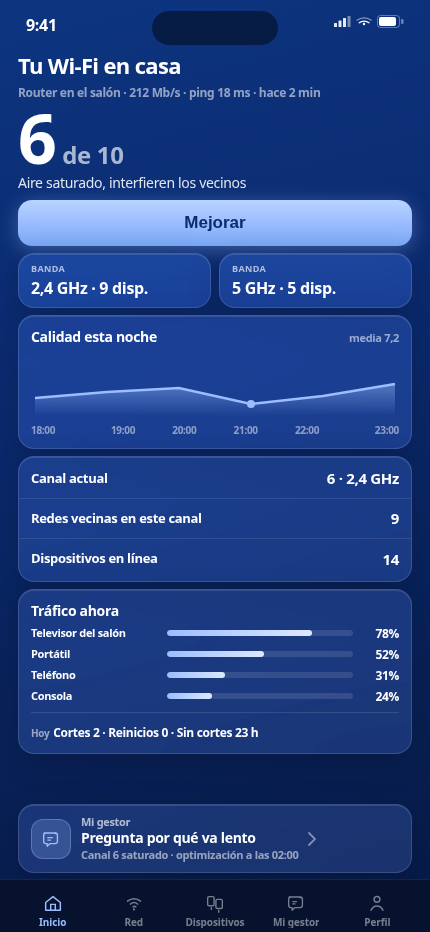
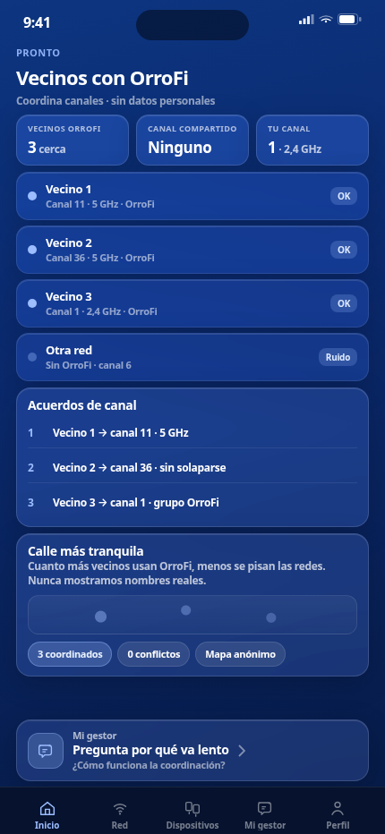
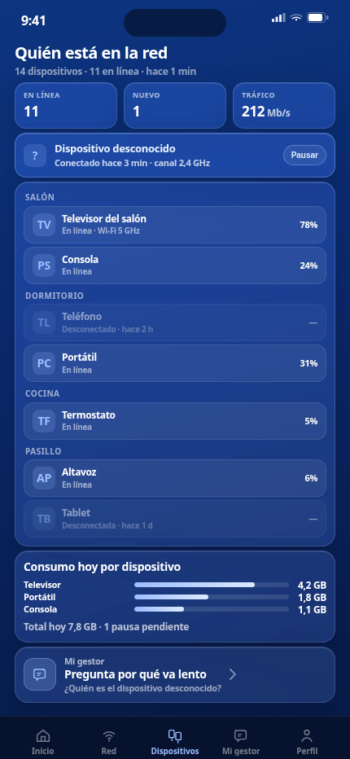

Ваш Wi‑Fi может работать лучше. OrroFi знает как.
Приложение само слушает эфир вокруг вашего дома, находит, что мешает сети, и наводит порядок одним касанием. Без настроек, без звонков в поддержку, без мастера на пороге.

Почему дома тормозит Wi‑Fi
Вечер. Все дома: кто‑то смотрит фильм, кто‑то на видеозвонке, дети играют онлайн. И именно в этот момент картинка рассыпается на квадраты, а голос в трубке начинает заикаться.
Чаще всего дело не в тарифе и не в роутере. Просто за стеной, этажом выше и через дорогу живут соседи, и их роутеры говорят на той же волне, что и ваш. Эфир в доме похож на тесную кухню, где все говорят одновременно: каждый слышит каждого, и никто никого не понимает.

Wi‑Fi без помех
OrroFi смотрит, какие сети звучат вокруг и на каких каналах. Канал — это полоса эфира, по которой роутер разговаривает с вашими устройствами. Приложение выбирает самый тихий канал и переводит на него ваш роутер. Вы ничего не настраиваете: просто сеть снова становится быстрой и ровной.

Оценка сети и кнопка «Улучшить»
Сложное мы свели к одной цифре. Открываете приложение и видите: «Ваш Wi‑Fi: 6 из 10». Под цифрой простыми словами объяснено, что мешает. А рядом кнопка «Улучшить». Нажали, подождали несколько секунд, и вот уже 9 из 10.


Соседи с OrroFi не мешают друг другу Скоро
Здесь начинается то, чего не умеет ни одно другое приложение. Когда рядом живут несколько семей с OrroFi, их роутеры договариваются между собой и расходятся по разным каналам, чтобы никто никому не мешал. Чем больше соседей с OrroFi, тем тише эфир и тем быстрее интернет у всех. Хорошая сеть становится общим делом всего дома и всей улицы.

И это ещё не всё
- Кто в вашей сети. Все устройства под понятными именами: «Телевизор в гостиной», «Телефон Марии», «Камера у входа». Незнакомец заметен сразу.
- Пауза. Ужин, уроки, сон: интернет на детском планшете останавливается одним касанием.
- Гостевая сеть. Гостям достаётся отдельный Wi‑Fi, а ваш пароль остаётся при вас.
- Скорость. Честный замер прямо с телефона, в любой комнате.

Дома и на мобильном — одно целое
Телефон дома ловит слабо, а в дальней комнате звонок рвётся на полуслове? OrroFi замечает это сам и подскажет, как помочь: включить звонки через Wi‑Fi, чтобы голос шёл по домашней сети, а не по уставшей вышке. Остаток гигабайтов, пакеты, счета и все линии семьи собраны в одном месте, рядом с вашим Wi‑Fi. Не нужно держать на телефоне ещё одно приложение.
А если что-то тормозит, просто спросите Mi gestor. Он сам разберётся, в чём дело: в Wi‑Fi, в мобильной сети или в закончившемся пакете, и ответит одной понятной фразой.

И это ещё не всё
- Mi gestor. Умный помощник отвечает в любое время суток, а если нужен человек, передаст ему разговор вместе со всей историей.
- Счета и услуги. Тариф, счета, мобильные линии и визит техника в одном месте.

Ваши данные остаются у вас
Список ваших устройств, их имена и адреса не покидают телефон. Пароли от Wi‑Fi мы не храним. Всё, что OrroFi узнаёт о вашем доме, служит только вам.

Как начать
- Установите OrroFi.
- Войдите по номеру телефона, код придёт в SMS.
- Будучи дома, нажмите «Проверить мою сеть».
Вопросы и ответы
У меня iPhone, приложение увидит соседей?
Да. Соседние сети видит ваш роутер, а приложение показывает картину и наводит порядок.
Нужно ли разбираться в технике?
Нет. Вам хватит одной цифры и одной кнопки.
Безопасно ли это?
Данные о ваших устройствах остаются в телефоне, а роутер меняет настройки только по вашей команде.